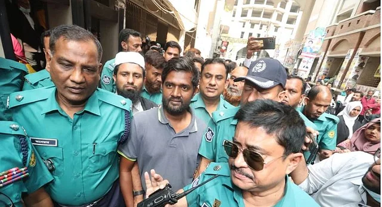
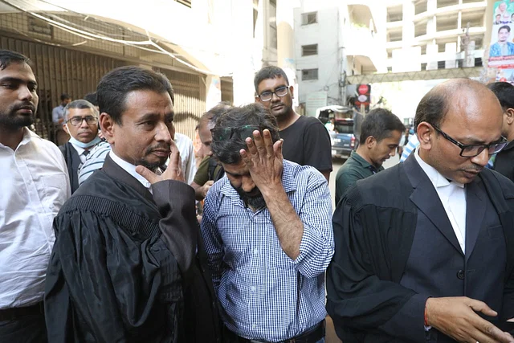

নিজস্ব প্রতিবেদক ঢাকা
আপডেট: ০৩ এপ্রিল ২০২৩, ১৬: ১৯
গণমাধ্যমের সঙ্গে কথা বলছেন শামসুজ্জামানের আইনজীবীরা | ছবি: দীপু মালাকার
ডিজিটাল নিরাপত্তা আইনে রাজধানীর রমনা থানায় করা মামলায় জামিন পেয়েছেন প্রথম আলোর সাংবাদিক শামসুজ্জামান। পুলিশ প্রতিবেদন না দেওয়া পর্যন্ত তাঁকে জামিন দেওয়া হয়েছে।
আজ সোমবার ঢাকার চিফ মেট্রোপলিটন ম্যাজিস্ট্রেট (সিএমএম) আদালতে দ্বিতীয়বার জামিন আবেদন করেন শামসুজ্জামান। অ্যাডিশনাল চিফ মেট্রোপলিটন ম্যাজিস্ট্রেট মোহাম্মদ আসাদুজ্জামান নূর ২০ হাজার টাকা মুচলেকায় তাঁর জামিন মঞ্জুর করেছেন। শামসুজ্জামানের আইনজীবী প্রশান্ত কর্মকার বিষয়টি জানিয়েছেন।
গত বৃহস্পতিবার সিএমএম আদালতে আনা হয় শামসুজ্জামানকে। ওইদিন জামিন আবেদন নাকচ করে তাঁকে কারাগারে পাঠানো হয় | প্রথম আলো ফাইল ছবি
শামসুজ্জামানের পক্ষে আদালতে আরও উপস্থিত ছিলেন আইনজীবী মাহবুবুল হক, আশরাফ-উল-আলম, চৈতন্য চন্দ্র হালদার, সুমন কুমার রায়, বাহাউদ্দিন ইমরান, আমিনুল গণি।
গত বৃহস্পতিবার (৩০ মার্চ) সিএমএম আদালতে আনা হয় শামসুজ্জামানকে। পরে রমনা থানা-পুলিশ তাঁকে কারাগারে আটক রাখার আবেদন করে। সাংবাদিক শামসুজ্জামানের জামিন চেয়ে আদালতে আবেদন করেন তাঁর আইনজীবী। ওই দিন উভয় পক্ষের শুনানি নিয়ে আদালত জামিন আবেদন নাকচ করে কারাগারে পাঠানোর আদেশ দেন।
জামিন পাওয়ার খবর শুনে আদালত প্রাঙ্গণে শামসুজ্জামানের ঘনিষ্ঠ সাংবাদিক নূর সিদ্দিকীর কান্না | ছবি: দীপু মালাকার
শামসুজ্জামানকে ওই দিন আদালত থেকে কেরানীগঞ্জে ঢাকা কেন্দ্রীয় কারাগারে নেওয়া হয়। পরদিন শুক্রবার সেখান থেকে তাঁকে গাজীপুরে কাশিমপুর কেন্দ্রীয় কারাগারে নেওয়া হয়। এর পরদিন শনিবার আবার ঢাকা কেন্দ্রীয় কারাগারে আনা হয়।
ডিজিটাল নিরাপত্তা আইনে শামসুজ্জামানের বিরুদ্ধে রাজধানীর তেজগাঁও থানায় আরেকটি মামলা রয়েছে।
গত বুধবার ভোর চারটার দিকে সাভারে জাহাঙ্গীরনগর বিশ্ববিদ্যালয়ের পাশের আমবাগান এলাকায় শামসুজ্জামানের বাসায় যান ১৪ থেকে ১৫ জন। নিজেদের পুলিশের অপরাধ তদন্ত বিভাগের (সিআইডি) সদস্য পরিচয়ে শামসুজ্জামানের থাকার কক্ষ তল্লাশি করে তাঁর ব্যবহৃত একটি ল্যাপটপ, দুটি মুঠোফোন ও একটি পোর্টেবল হার্ডডিস্ক নিয়ে যান। পরে শামসুজ্জামানকে নিয়ে যান তাঁরা।
বাসা থেকে তুলে নেওয়ার ২০ ঘণ্টার বেশি সময় পর গত শুক্রবার দিবাগত রাতে শামসুজ্জামানের বিরুদ্ধে রমনা থানায় ডিজিটাল নিরাপত্তা আইনে মামলা হয়। প্রথম আলো সম্পাদক মতিউর রহমানকে এই মামলার প্রধান আসামি করা হয়। তিনি গতকাল এই মামলায় ছয় সপ্তাহের আগাম জামিন পেয়েছেন। এই মামলার বাদী আইনজীবী আবদুল মালেক (মশিউর মালেক)। তিনি নিজেকে হাইকোর্টের আইনজীবী পরিচয় দিয়েছেন।
করোনার বিধিনিষেধের সময় সবচেয়ে দরিদ্র জেলায় সবচেয়ে কম ত্রাণ দেওয়া...